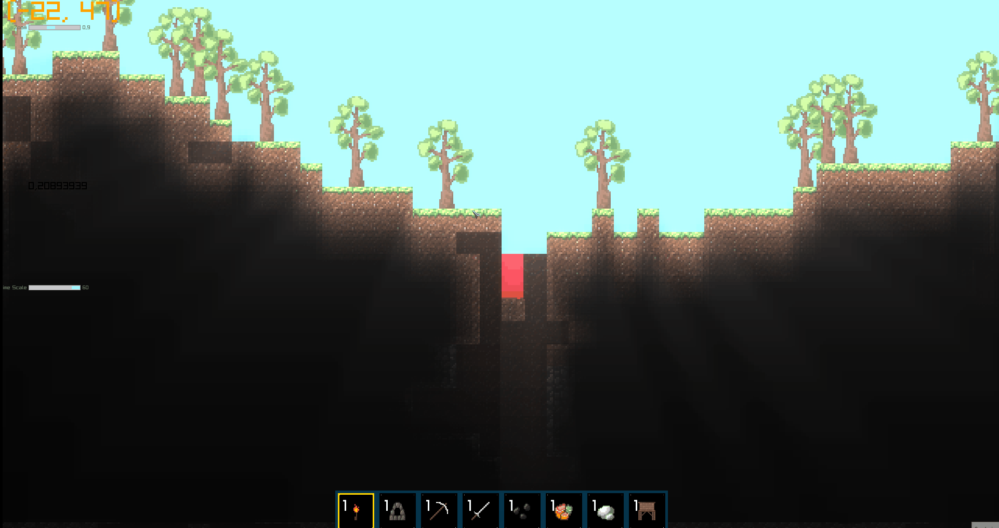

Project
2D Survival Sandbox
A simple survival sandbox built on a rudimentary game engine with Raylib and C#

Overview
A 2D game hobby project created using the Raylib framework. The project originally started as a simple terrain generator using Perlin noise, but gradually evolved into a Terraria-inspired sandbox game. Drawing inspiration from games such as Terraria, Starbound, Core Keeper and Minecraft, the goal was to experiment with procedural world generation and develop the foundations of a larger 2D game.
This is an ongoing personal project that I primarily worked on during the summer of 2025, alongside my studies.
My contribution
- Perlin-Based Terrain Generation
- Chunk-based World Generation and Rendering
- Tile Management and World Interaction
- Entity-Component Architecture
- Memory Management and Performance Optimizations
- Inventory System
- Lighting-Engine
- Particle System
- AABB Collision-System
- Simple Physics-System
- Gameplay Programming
- Art-Assets (Aseprite)
Challenges & solutions
The problem
Poor performance the longer the player plays the game.
How I solved it
I Saved the changed chunks in json format, which allowed me to generate the world on the fly instead of saving the whole world in a matrix at all times. Instead of saving the whole world in a 2D-Matrix, with IDs correlated to their distincitive block-IDs, the saved chunks are loaded in during runtime. This greatly improved the performance of the game since the world is infinitely generating in all directions.
What I learned
Building my own game engine taught me how much work a good foundation requires. There were times I got stuck because something wasn't implemented correctly from the start, and I had to return to code that I had written months earlier. The further I got in development, the more my progress got halted. It taught me to plan the core structure of an engine ahead, but also that prematurely optimizing everything can also leave you stuck in a deadlock.